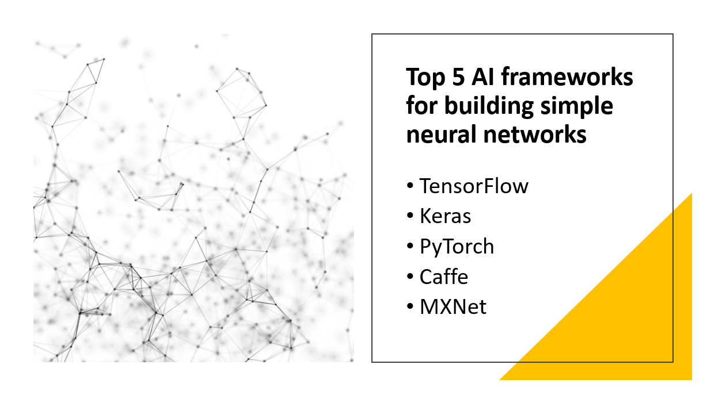

Introduction
Neural networks have become the cornerstone of Artificial Intelligence (AI) applications, powering various tasks such as image recognition, natural language processing, and recommendation systems.
Building simple neural networks requires efficient AI frameworks that provide the necessary tools and libraries.
In this blog post, we will explore the top five AI frameworks for building simple neural networks, empowering developers to quickly prototype and deploy AI models.
Why use AI frameworks for building simple neural networks
- AI frameworks provide high-level APIs and functions for building simple neural networks.
- AI frameworks are optimized for fast computation, enabling efficient training and inference.
- AI frameworks can handle large datasets and scale to more complex models.
- AI frameworks offer a wide range of libraries and tools for data preprocessing, evaluation, and visualization.
- AI frameworks have active user communities, providing resources and assistance for building simple neural networks.
Here Are Our Top 5 AI frameworks for building simple neural networks:
1: TensorFlow
Overview and Importance
TensorFlow, an open-source AI framework by Google, is highly regarded for building and deploying machine learning models, especially neural networks. Its popularity, flexibility, scalability, and extensive support from Google and the open-source community contribute to its importance. With a user-friendly interface and a rich ecosystem, TensorFlow is accessible to developers of all expertise levels.
Learn more about TensorFlow
Key Features
High-Level APIs
- TensorFlow provides user-friendly APIs like Keras, simplifying the construction and training of neural networks.
- TensorFlow offers built-in functions for data preprocessing tasks such as data augmentation, feature scaling, and handling missing values.
Model Evaluation Techniques
- TensorFlow supports various model evaluation techniques, including cross-validation and metrics calculation.
Deployment Flexibility
- TensorFlow allows models to be deployed on different devices, optimized for mobile platforms, and deployed in the cloud.
2: Keras
Overview and Importance
Keras, a high-level neural networks API built on top of TensorFlow, simplifies the process of building and training deep learning models. Its user-friendly interface and abstraction level make it accessible to beginners and experienced developers. Keras gained importance in deep learning by providing simplicity, quick prototyping, and experimentation capabilities, allowing users to focus on model design and research without dealing with lower-level complexities.
Learn more about Keras
Key Features
Modular and User-friendly API
- Keras offers a user-friendly API that allows for easy construction of neural networks through modular layers.
Support for Various Architectures
- Keras supports a wide range of neural network architectures, including CNNs, RNNs, and transformers.
Comprehensive Pre-processing Functions
- Keras provides a variety of pre-processing functions for handling different types of data, such as image data augmentation and text tokenization.
Extensive Collection of Pre-trained Models
- Keras includes a diverse collection of pre-trained models, enabling transfer learning and saving development time.
3: PyTorch
Overview and Importance
PyTorch is an open-source deep learning framework that has gained significant popularity in the field of artificial intelligence. It provides a dynamic computational graph, which allows for more flexibility and ease in building and training neural networks. PyTorch's popularity stems from its user-friendly interface, efficient computation, and strong support for research-oriented development.
Learn more about PyTorch
Key Features
Dynamic Computational Graph
- PyTorch's dynamic computational graph allows for flexible network architecture definition and modification, making it suitable for complex and changing structures.
- PyTorch provides a wide range of pre-defined layers, activation functions, and tools for building deep learning models.
Automatic Differentiation
- PyTorch's automatic differentiation feature enables efficient computation of gradients, facilitating training through techniques like backpropagation.
GPU Acceleration
- PyTorch seamlessly integrates with CUDA and supports GPU acceleration, enabling faster computations and training on parallel hardware.
4: Caffe
Overview and Importance
Caffe is a deep learning framework that was initially developed at the University of California, Berkeley. It gained popularity for its efficiency and speed, particularly in computer vision tasks. Caffe's design philosophy focuses on simplicity, extensibility, and ease of use, making it a popular choice among researchers and industry practitioners.
Learn more about Caffe
Key Features
Caffe Model Zoo
- Expressive architecture description language for defining and configuring deep neural networks with a collection of pre-defined models.
CPU and GPU Computation
- Supports efficient training and inference on both CPU and GPU platforms, leveraging optimized libraries.
Focus on CNNs
- Designed specifically for convolutional neural networks and computer vision tasks, with built-in functionality for image classification, object detection, and segmentation.
5: MXNet
Overview and Importance
MXNet is an open-source deep learning framework designed for efficient and flexible development of machine learning models. Developed by Apache, MXNet gained popularity for its scalability, performance, and support for both imperative and symbolic programming. MXNet's importance lies in its ability to handle large-scale distributed training and deployment of deep learning models across multiple platforms.
Learn more about MXNet
Key Features
Dynamic Computation Graphs
- Support for flexible model construction and dynamic control flow, allowing easy experimentation with complex models.
Gluon High-Level API
- User-friendly interface for building deep learning models using imperative programming, facilitating debugging and iterative model design.
Distributed Training
- Ability to train large-scale models across multiple devices or machines, leveraging data parallelism and model parallelism for efficient resource utilization and faster training.
Conclusion
AI frameworks are essential for building simple neural networks, offering powerful tools and resources for creating and training machine learning models. TensorFlow, Keras, PyTorch, Caffe, and MXNet are the top frameworks in this regard. Each framework has its own unique features and advantages, finding applications in various fields such as computer vision, natural language processing, recommendation systems, and more. Developers are encouraged to explore these frameworks based on their project requirements and preferences to drive innovation and solve complex problems in AI.